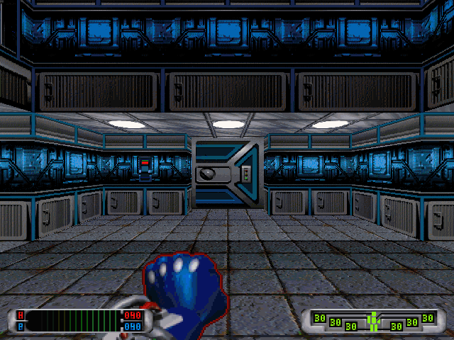
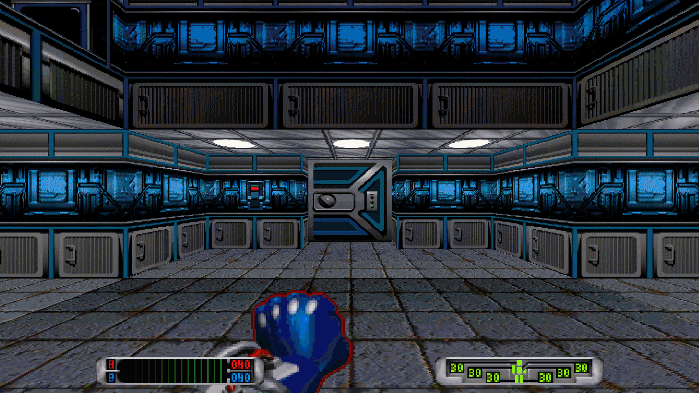
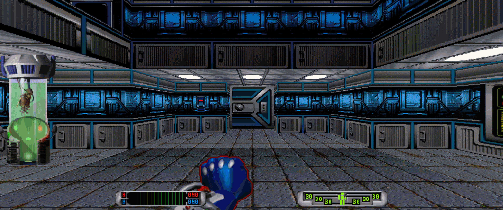
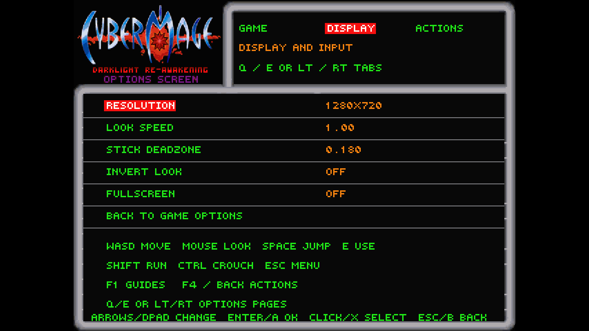
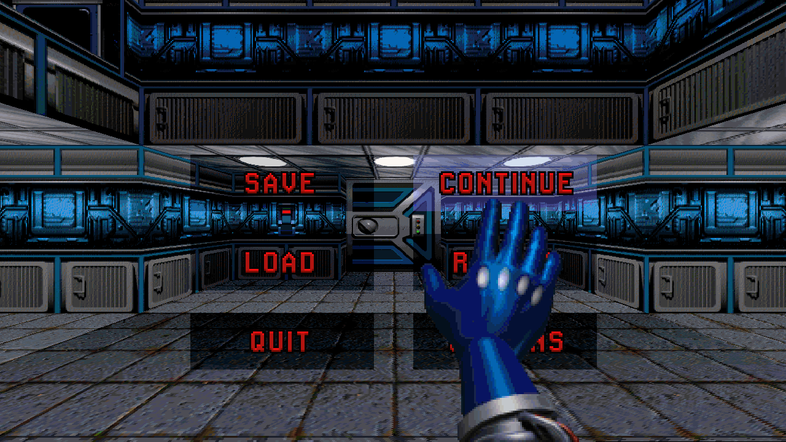
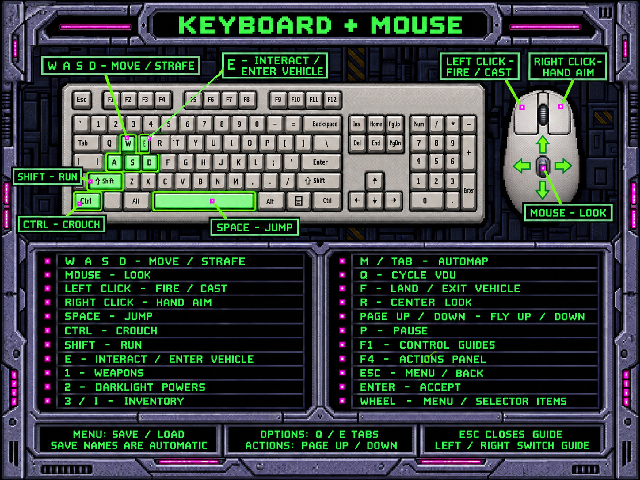
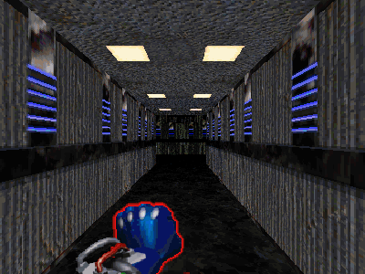
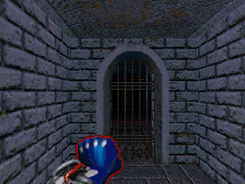
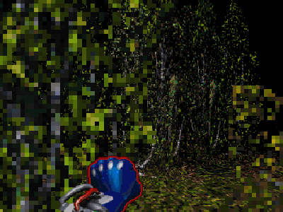

Welcome, Mage!
In 1995 David W. Bradley and Origin released CyberMage: Darklight Awakening, a first-person shooter with a comic-book soul. It ran on DOS/4GW. Your PC no longer does.
Darklight Re-Awakening brings it back. Original game code runs on an x86 interpreter written in Rust, with DOS, DPMI, BIOS, VESA and sound services rebuilt natively. Function by function, native Rust replacements are checked bit for bit against the original.
Latest News NEW!
Version 1.2.0 — adds embedded SC-55 music with your own firmware/wave ROMs; no licensed ROMs are bundled. Download the portable Windows x64 build or get the source.
- Options → Display → Music Output selects Windows MIDI or embedded SC-55.
- SC-55 requires your own lawfully obtained ROMs; the ZIP includes GPL corresponding source, not ROMs.
- Saved V-Sync toggle for windowed and fullscreen play.
- Native renderer work: walls, floors, ceilings, sky, props and HUD.
- Widescreen sees more of the world, without stretching the original UI.
- WASD and mouse look, or an Xbox controller. Both can coexist.
- Automatic date-and-time save names. No typing on a gamepad.
- Native EA TGV movie playback and HMI music support.
Options
| Resolution | 640×480 to 5120×2160, including ultrawide |
|---|---|
| Frame rate | Adaptive 3D resolution targeting 60 FPS |
| Fullscreen | Borderless Windows desktop window |
| Input | Keyboard/mouse + Xbox/XInput |
| Look speed | Adjustable sensitivity, deadzone and inverted look |
| Music | Windows General MIDI or embedded SC-55 (user-supplied ROMs) |
| Difficulty | Novice / Normal / Nasty |
Screenshots
See the mod in action. Select a screenshot to view it at full size.


















Screenshots contain original CyberMage artwork, which retains its original rights and is not covered by the project's MIT license.
Trailer
Load (Download)
You need your own lawfully obtained CyberMage v1.01F game files. No commercial game installation is included.
For Windows 10/11 x64. No installer, Rust, Python or separate VC++ Redistributable is required.
- Download and extract the entire Windows ZIP into a writable folder (not Program Files).
- Run
cybermage.exe; first-run setup opens automatically. - Import your own ISO-9660
.isoor selectCYBERMAG/CM_HI.EXEfrom your installed game. - Play! Personal saves and settings stay on your machine.
ZIP SHA-256 checksum · Read the included README and controls guide. Redistribute only the original clean ZIP, not an installation containing imported game files or saves.
Prefer building from source? Install Rust and your platform's build tools, then run cargo build --locked --release.
Training
| Action | Keyboard + mouse | Xbox pad |
|---|---|---|
| Move / look | WASD / mouse | Left / right stick |
| Fire / hand aim | Left / right click | RT / hold LT |
| Jump / crouch | Space / Ctrl | A / B |
| Use / enter vehicle | E | X |
| Weapons / powers / items | 1 / 2 / 3 | LB / RB / Y |
| Map | M or Tab | Back → Automap |
| Guides / actions | F1 / F4 | Back → Control Guides / Back |
| Menu | Esc | Start |
Everything else: the full controls page.
Under the Hood
CM_HI.EXE is a Watcom C++ program in LE format. Its debug information still names functions and variables, helping the native ports follow the original engine.
A built-in differential tester runs old and new implementations side by side and compares the bytes they touch.
This page uses system fonts and CSS borders. Gameplay screenshots illustrate the mod's features; no extracted game fonts or standalone interface decorations are distributed here.
Credits
CyberMage: Darklight Awakening
Original game by David W. Bradley, presented by Origin and Electronic Arts.
Darklight Re-Awakening is an independent, unofficial fan game-mod, not affiliated with or endorsed by Origin or Electronic Arts. Original project code retains its MIT license; the executable with Nuked-SC55 is GPL-2.0-or-later. Commercial content and trademarks retain their original rights.
The edited cover and gameplay screenshots contain commercial artwork that retains its original rights and is not MIT licensed. Editing the cover's subtitle does not remove those rights. See the third-party notice.